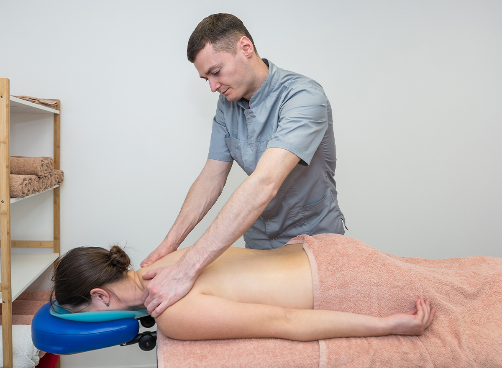
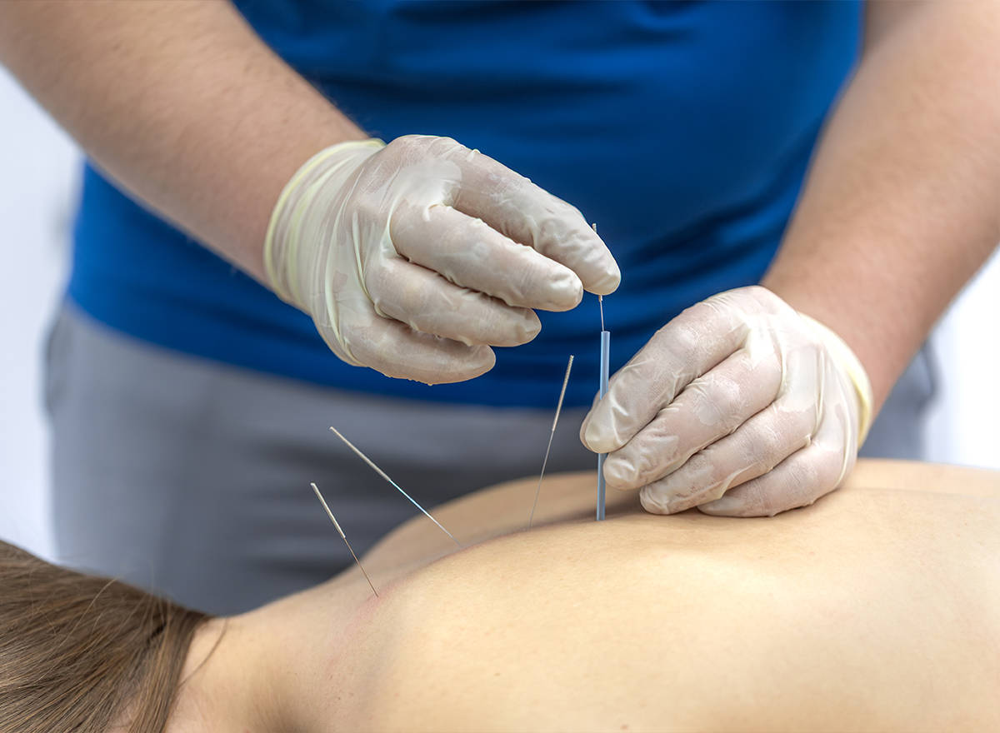
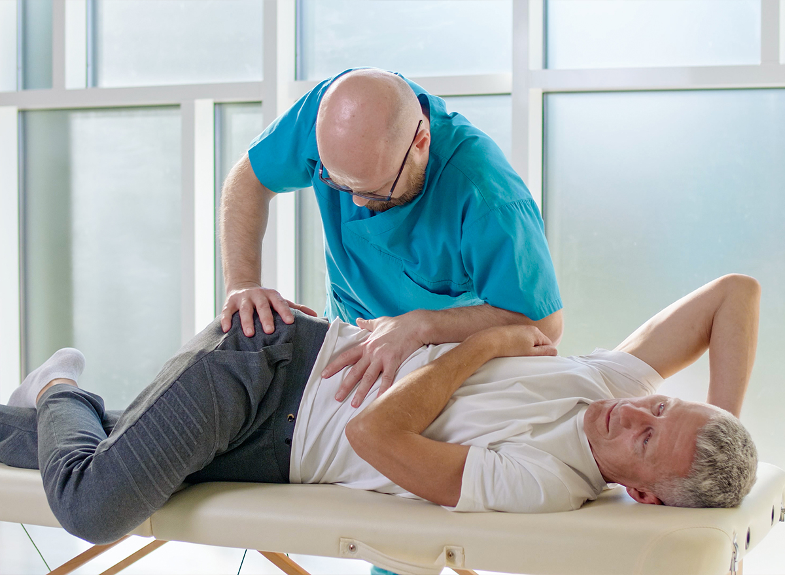

Posture
5 min read
Posture
5 min read
Desk Health
7 Desk Stretches That Undo a Day of Sitting
Simple moves you can do between meetings to release tight hips, neck and shoulders.
Evidence-based physiotherapy for back pain, sports injuries and post-surgery rehab — one-to-one sessions with chartered physios who build a plan around your goals.
4.9 / 5 rating
From 2,300+ recovered patients
Knee flexion regained
After ACL rehab
Avg. pain score
after 6 sessions
Next available
Today, 3:30 PM
// WHERE DOES IT HURT?
Stiffness, clicking or pain lifting your arm overhead often comes from the rotator cuff or joint capsule. We restore range first, then rebuild strength.
Desk work, gaming and repetitive lifting overload small tendons. We combine manual therapy, splinting advice and grip retraining.
Groin pain, a stiff hip in the morning or pain walking up stairs. We assess your gait, pelvis and core to treat the cause, not just the symptom.
From runner’s knee to full ACL reconstruction, our sports physios guide you through staged rehab with clear return-to-sport testing.
Rolled ankles that keep giving way or heel pain with your first steps. Balance training and load management get you back on your feet.
Tension headaches, whiplash or “tech neck” from long screen days. Gentle mobilisation and posture coaching bring quick relief.
Rounded shoulders and a tight mid-back limit breathing and lifting. We release stiff segments and strengthen your postural muscles.
The most common reason people see a physio. We combine hands-on therapy with a graded exercise plan so the pain stays gone.
Pain gripping a racquet, mouse or kettle. Shockwave and progressive tendon loading settle stubborn tennis and golfer’s elbow.
Calf strains and Achilles pain are common in runners. We use load monitoring and running analysis to return you safely to your distance.
// OUR TREATMENTS

Joint mobilisation, soft-tissue release and massage to ease pain and free stiff movement.
Learn moreStaged, test-driven rehab that gets athletes back to training stronger than before.
Learn more
Fine-needle trigger point release for tight, knotted muscles and referred pain.
Learn more
Protocol-led recovery after joint replacement, ACL, spinal and shoulder surgery.
Learn moreBalance, gait and strength work after stroke, MS, Parkinson’s or brain injury.
Learn morePlayful sessions for developmental delays, sports injuries and posture in kids.
Learn more// YOUR RECOVERY JOURNEY
Every plan is measured. We re-test your pain, range and strength at each stage, so you always know where you are and what comes next.
60-minute assessment, movement screen and a clear diagnosis in plain language.
Hands-on treatment to calm pain and restore the range you have lost.
Progressive loading in our rehab gym plus a home plan in the Hospil app.
Return-to-sport testing and a maintenance plan so the injury stays in the past.
// MEASURED RESULTS
We track every patient’s pain, mobility and function from session one. These are our clinic-wide averages from the last 12 months.
Average joint mobility regained
Returned to sport or work


// WHY HOSPIL PHYSIO
You see the same chartered physiotherapist every visit — no rotating staff, no 15-minute rush. Our 600 m² rehab gym, anti-gravity treadmill and in-house sports lab mean we treat you start to finish under one roof.
// RECOVERY PROGRAMS
| Compare plans Every session is 45 minutes, one-to-one with a licensed physio. | Single Session For a quick check or a flare-up $75/ session | Most chosen 6-Week Recovery For most injuries & back pain $390/ 6 sessions | Athlete Pro For post-surgery & return to sport $720/ 12 sessions |
|---|---|---|---|
| Sessions included | 1 | 6 | 12 |
| Assessment & diagnosis | Included | Included | Included |
| Hands-on treatment | Included | Included | Included |
| Home exercise sheet | Included | Included | Included |
| Progress re-testing every visit | Not included | Included | Included |
| Rehab gym access | Not included | Included | + Gym coaching |
| Hospil app with video plan | Not included | Included | Included |
| Force-plate & strength testing | Not included | Not included | Included |
| Running / movement analysis | Not included | Not included | Included |
| Return-to-sport clearance | Not included | Not included | Included |
| Book a Session |
Start Recovery Plan | Go Pro |
We claim from your insurer
// MEET YOUR PHYSIOS
 12 yrs exp.
12 yrs exp.
Clinical Director, DPT
 9 yrs exp.
9 yrs exp.
Sports Physiotherapist
 11 yrs exp.
11 yrs exp.
Neuro Physiotherapist
 7 yrs exp.
7 yrs exp.
Post-Surgery Specialist
// FREE EXERCISE LIBRARY
200+ physio-made exercise videos, filtered by body part and level. Free for every patient in the Hospil app.
// RECOVERY STORIES
“Seven months after surgery I played a full 90 minutes. Liam’s testing told me exactly when I was ready — no guessing.”
Amateur footballer
“Walking my granddaughter to school again, without a stick. Noah was patient, encouraging and always on time.”
Retired teacher
// FIRST VISIT FAQ
New to physiotherapy? Here’s what to expect. Still unsure whether physio is right for you? Book a free 15-minute call with one of our team.
No. You can book directly with us. Some insurance plans ask for a referral before they pay — our front desk will check your cover for you before your first visit.
We talk through your history, test your movement, strength and joints, explain the diagnosis and start treatment in the same session. You leave with a written plan and your first home exercises.
Comfortable clothes you can move in. For knee or hip problems bring shorts; for shoulder or neck problems a vest top helps. Runners, please bring your usual running shoes.
Most people need 4-8 sessions. After your assessment your physio will give you an honest estimate — and we re-test every visit so you can see the progress.
Yes, most private health plans cover physiotherapy. We bill major insurers directly, so you usually pay only your excess on the day.
// Advice Hub
Posture
5 min read
Desk Health
Simple moves you can do between meetings to release tight hips, neck and shoulders.
 Running
7 min read
Running
7 min read
Sports Injury
Learn what drives kneecap pain and the strength plan that keeps you on the road.
 Back Pain
6 min read
Back Pain
6 min read
Recovery
Why gentle movement beats bed rest, and how to pace activity as your back heals.